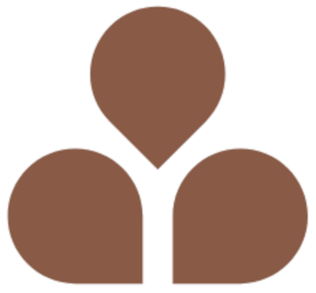

Beleza e Saúde em Equilíbrio

Perfil Profissional
Profissional da área da saúde há 21 anos, Andrea Andrade, Enfermeira, com vasta experiência no ambiente neonatal#link , utiliza suas habilidades para orientar os pais quanto aos cuidados que se deve ter com o recém-nascido #link, bem como, realiza o furo humanizado nas orelhinhas desses bebês .#link
Não o bastante, especializou-se em estética, com isso, passou a realizar em adultos o Procedimento Estético Invasivo para Microvaso#link que confere a estes pacientes a secagem dos vasinhos localizados em seus membros inferiores e, assim, melhorando o aspecto da região acometida.
Neonatal setor do hospital preparado para receber bebês que nasceram antes das 37 semanas de gestação

Procedimento Estético Invasivo para Microvasos
Esta técnica tem por finalidade eliminar os microvasos decorrentes de fatores como predisposição genética, utilização de anticoncepcionais, gestação, obesidade e outros que interferem na circulação sanguínea dos membros inferiores das pessoas.
Trata-se de um método minimamente invasivo que além de eliminar sintomas como queimação e dor também melhora a estética da região acometida.
Pessoas que possuem comorbidades, tais como diabetes descompensada, insuficiência cardíaca, patologia oncológica ativa, antecedentes de trombose venosa profunda, estados infecciosos, arteriopatias isquêmica e hepatopatias não devem se submeter a este tratamento.

Furo humanizado nas orelhinhas desses bebês
Trata-se de um procedimento no qual se combina o uso de pomadas anestésica seguido da aplicação de técnicas de acupuntura que permite realizar o furo no ponto da orelha menos enervado.
Fica a critério dos pais qual técnica será aplicada, podendo ser a Body Piercing quando o furo é feito utilizando-se de um cateter do tipo jelco que, inclusive, será o guia do brinco ou o método System quando se faz uso de aplicadores descartáveis compostos com o modelo de brinco da Studex.
O momento ideal para que seja realizado o primeiro furo na orelhinha do bebê deve ser após o cumprimento das principais doses de vacinas.

Cuidados que se deve ter com o recém-nascido
É interessante que o bebê esteja devidamente agasalhado e que possa dormir, em seu berço, mas que seja próximo aos seus pais.
No momento do banho utilize água morna e sabonete neutro. Uma vez enxuto, realize a assepsia do umbigo utilizando álcool a 70% aplicando-o com um cotonete.
A amamentação deve ocorrer sempre que o bebê demonstrar fome.
O bebê não necessita de qualquer outro líquido, como água ou chás, pois o aleitamento materno é suficiente para suprir suas necessidades.